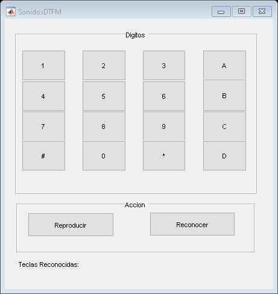

function varargout = SonidosDTFM(varargin) %SONIDOSDTFM MATLAB code file for SonidosDTFM.fig % SONIDOSDTFM, by itself, creates a new SONIDOSDTFM or raises the existing % singleton*. % % H = SONIDOSDTFM returns the handle to a new SONIDOSDTFM or the handle to % the existing singleton*. % % SONIDOSDTFM('Property','Value',...) creates a new SONIDOSDTFM using the % given property value pairs. Unrecognized properties are passed via % varargin to SonidosDTFM_OpeningFcn. This calling syntax produces a % warning when there is an existing singleton*. % % SONIDOSDTFM('CALLBACK') and SONIDOSDTFM('CALLBACK',hObject,...) call the % local function named CALLBACK in SONIDOSDTFM.M with the given input % arguments. % % *See GUI Options on GUIDE's Tools menu. Choose "GUI allows only one % instance to run (singleton)". % % See also: GUIDE, GUIDATA, GUIHANDLES % Edit the above text to modify the response to help SonidosDTFM % Last Modified by GUIDE v2.5 03-Jun-2019 20:31:00 % Begin initialization code - DO NOT EDIT gui_Singleton = 1; gui_State = struct('gui_Name', mfilename, ... 'gui_Singleton', gui_Singleton, ... 'gui_OpeningFcn', @SonidosDTFM_OpeningFcn, ... 'gui_OutputFcn', @SonidosDTFM_OutputFcn, ... 'gui_LayoutFcn', [], ... 'gui_Callback', []); if nargin && ischar(varargin{1}) gui_State.gui_Callback = str2func(varargin{1}); end if nargout [varargout{1:nargout}] = gui_mainfcn(gui_State, varargin{:}); else gui_mainfcn(gui_State, varargin{:}); end % End initialization code - DO NOT EDIT % --- Executes just before SonidosDTFM is made visible. function SonidosDTFM_OpeningFcn(hObject, eventdata, handles, varargin) % This function has no output args, see OutputFcn. % hObject handle to figure % eventdata reserved - to be defined in a future version of MATLAB % handles structure with handles and user data (see GUIDATA) % varargin unrecognized PropertyName/PropertyValue pairs from the % command line (see VARARGIN) % Choose default command line output for SonidosDTFM clc handles.output = hObject; handles.fs = 8e3; handles.teclas = []; handles.sonido = []; handles.teclapres = []; % Update handles structure guidata(hObject, handles); % UIWAIT makes SonidosDTFM wait for user response (see UIRESUME) % uiwait(handles.figure1); % --- Outputs from this function are returned to the command line. function varargout = SonidosDTFM_OutputFcn(hObject, eventdata, handles) % varargout cell array for returning output args (see VARARGOUT); % hObject handle to figure % eventdata reserved - to be defined in a future version of MATLAB % handles structure with handles and user data (see GUIDATA) % Get default command line output from handles structure varargout{1} = handles.output; % --- Executes on button press in pushbuttonRep. function pushbuttonRep_Callback(hObject, eventdata, handles) % hObject handle to pushbuttonRep (see GCBO) % eventdata reserved - to be defined in a future version of MATLAB % handles structure with handles and user data (see GUIDATA) handles.sonido = dtmf (handles.teclas, handles.fs); sound(handles.sonido,handles.fs); guidata(hObject, handles); % --- Executes on button press in pushbuttonRec. function pushbuttonRec_Callback(hObject, eventdata, handles) % hObject handle to pushbuttonRec (see GCBO) % eventdata reserved - to be defined in a future version of MATLAB % handles structure with handles and user data (see GUIDATA) handles.sonido = dtmf (handles.teclas, handles.fs); handles.teclaPres = decodificaSenal(handles.sonido, handles.fs); set (handles.textSal,'String', ['Teclas Reconocidas:' handles.teclaPres]); handles.teclas = []; guidata(hObject, handles); % --- Executes on button press in pushbutton1. function pushbutton1_Callback(hObject, eventdata, handles) % hObject handle to pushbutton1 (see GCBO) % eventdata reserved - to be defined in a future version of MATLAB % handles structure with handles and user data (see GUIDATA) handles.teclas = horzcat(handles.teclas,'1'); guidata(hObject, handles); % --- Executes on button press in pushbutton4. function pushbutton4_Callback(hObject, eventdata, handles) % hObject handle to pushbutton4 (see GCBO) % eventdata reserved - to be defined in a future version of MATLAB % handles structure with handles and user data (see GUIDATA) handles.teclas = horzcat(handles.teclas, '4'); guidata(hObject, handles); % --- Executes on button press in pushbutton2. function pushbutton2_Callback(hObject, eventdata, handles) % hObject handle to pushbutton2 (see GCBO) % eventdata reserved - to be defined in a future version of MATLAB % handles structure with handles and user data (see GUIDATA) handles.teclas = horzcat(handles.teclas, '2'); guidata(hObject, handles); % --- Executes on button press in pushbutton5. function pushbutton5_Callback(hObject, eventdata, handles) % hObject handle to pushbutton5 (see GCBO) % eventdata reserved - to be defined in a future version of MATLAB % handles structure with handles and user data (see GUIDATA) handles.teclas = horzcat(handles.teclas, '5'); guidata(hObject, handles); % --- Executes on button press in pushbutton8. function pushbutton8_Callback(hObject, eventdata, handles) % hObject handle to pushbutton8 (see GCBO) % eventdata reserved - to be defined in a future version of MATLAB % handles structure with handles and user data (see GUIDATA) handles.teclas = horzcat(handles.teclas, '8'); guidata(hObject, handles); % --- Executes on button press in pushbutton7. function pushbutton7_Callback(hObject, eventdata, handles) % hObject handle to pushbutton7 (see GCBO) % eventdata reserved - to be defined in a future version of MATLAB % handles structure with handles and user data (see GUIDATA) handles.teclas = horzcat(handles.teclas, '7'); guidata(hObject, handles); % --- Executes on button press in pushbuttonNum. function pushbuttonNum_Callback(hObject, eventdata, handles) % hObject handle to pushbuttonNum (see GCBO) % eventdata reserved - to be defined in a future version of MATLAB % handles structure with handles and user data (see GUIDATA) handles.teclas = horzcat(handles.teclas, '#'); guidata(hObject, handles); % --- Executes on button press in pushbutton0. function pushbutton0_Callback(hObject, eventdata, handles) % hObject handle to pushbutton0 (see GCBO) % eventdata reserved - to be defined in a future version of MATLAB % handles structure with handles and user data (see GUIDATA) handles.teclas = horzcat(handles.teclas, '0'); guidata(hObject, handles); % --- Executes on button press in pushbutton3. function pushbutton3_Callback(hObject, eventdata, handles) % hObject handle to pushbutton3 (see GCBO) % eventdata reserved - to be defined in a future version of MATLAB % handles structure with handles and user data (see GUIDATA) handles.teclas = horzcat(handles.teclas, '3'); guidata(hObject, handles); % --- Executes on button press in pushbutton6. function pushbutton6_Callback(hObject, eventdata, handles) % hObject handle to pushbutton6 (see GCBO) % eventdata reserved - to be defined in a future version of MATLAB % handles structure with handles and user data (see GUIDATA) handles.teclas = horzcat(handles.teclas, '6'); guidata(hObject, handles); % --- Executes on button press in pushbuttonA. function pushbuttonA_Callback(hObject, eventdata, handles) % hObject handle to pushbuttonA (see GCBO) % eventdata reserved - to be defined in a future version of MATLAB % handles structure with handles and user data (see GUIDATA) handles.teclas = horzcat(handles.teclas, 'A'); guidata(hObject, handles); % --- Executes on button press in pushbuttonB. function pushbuttonB_Callback(hObject, eventdata, handles) % hObject handle to pushbuttonB (see GCBO) % eventdata reserved - to be defined in a future version of MATLAB % handles structure with handles and user data (see GUIDATA) handles.teclas = horzcat(handles.teclas, 'B'); guidata(hObject, handles); % --- Executes on button press in pushbuttonC. function pushbuttonC_Callback(hObject, eventdata, handles) % hObject handle to pushbuttonC (see GCBO) % eventdata reserved - to be defined in a future version of MATLAB % handles structure with handles and user data (see GUIDATA) handles.teclas = horzcat(handles.teclas, 'C'); guidata(hObject, handles); % --- Executes on button press in pushbutton9. function pushbutton9_Callback(hObject, eventdata, handles) % hObject handle to pushbutton9 (see GCBO) % eventdata reserved - to be defined in a future version of MATLAB % handles structure with handles and user data (see GUIDATA) handles.teclas = horzcat(handles.teclas, '9'); guidata(hObject, handles); % --- Executes on button press in pushbuttonAst. function pushbuttonAst_Callback(hObject, eventdata, handles) % hObject handle to pushbuttonAst (see GCBO) % eventdata reserved - to be defined in a future version of MATLAB % handles structure with handles and user data (see GUIDATA) handles.teclas = horzcat(handles.teclas, '*'); guidata(hObject, handles); % --- Executes on button press in pushbuttonD. function pushbuttonD_Callback(hObject, eventdata, handles) % hObject handle to pushbuttonD (see GCBO) % eventdata reserved - to be defined in a future version of MATLAB % handles structure with handles and user data (see GUIDATA) handles.teclas = horzcat(handles.teclas, 'D'); guidata(hObject, handles); % --- Executes during object creation, after setting all properties. function textSal_CreateFcn(hObject, eventdata, handles) % hObject handle to textSal (see GCBO) % eventdata reserved - to be defined in a future version of MATLAB % handles empty - handles not created until after all CreateFcns called